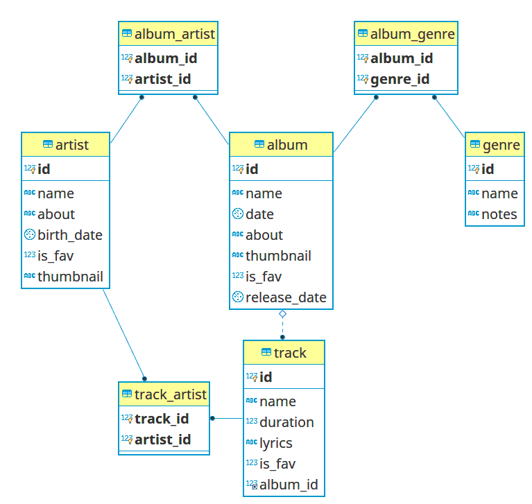

Using Django with legacy DB
Created for
Iva E. Popova, 2018-2019:

Create the demo project
Create the demo project
The project
# create new Django project
django-admin startproject using_legacy_db
# create the app, which will use the legacy db:
python manage.py startapp music_catalog_app
The database
# create the legacy db:
CREATE DATABASE music_catalog_legacy_db;
GRANT ALL PRIVILEGES ON music_catalog_legacy_db.* TO 'django_admin'@'localhost';
FLUSH PRIVILEGES;
The schema
{kind=link}
Import the schema
- Download the music_catalog_legacy_db schema dump: music_catalog_legacy_db.rowdump.sql
- Import it onto music_catalog_legacy_db:
mysql -u django_admin -p music_catalog_legacy_db < music_catalog_legacy_db.rowdump.sql
Using Multiple databases in Django Project
Using Multiple databases in Django Project
Set up a database router
- The easiest way to use multiple databases is to set up a our custom database router
- The router implements which database alias to use for which model.
- In general, we want app1_db to be used in all models for app1. All other queries should use the default database
Database routers overview
- A Database Router is a class that provides up to four methods:
db_for_read(model, **hints)db_for_write(model, **hints)allow_relation(obj1, obj2, **hints)allow_migrate(db, app_label, model_name=None, **hints)- A router doesn’t have to provide all these methods – it may omit one or more of them. If one of the methods is omitted, Django will skip that router when performing the relevant check
db_for_read(model, **hints)
- Suggest the database that should be used for read operations for objects of type model.
- If a database operation is able to provide any additional information that might assist in selecting a database, it will be provided in the hints dictionary.
- Returns None if there is no suggestion.
db_for_write(model, **hints)
- Suggest the database that should be used for write operations of objects of type Model
- If a database operation is able to provide any additional information that might assist in selecting a database, it will be provided in the hints dictionary.
- Returns None if there is no suggestion.
allow_relation(obj1, obj2, **hints)
allow_relation(obj1, obj2, **hints)- Return True if a relation between obj1 and obj2 should be allowed, False if the relation should be prevented, or None if the router has no opinion.
- This is purely a validation operation, used by foreign key and many to many operations to determine if a relation should be allowed between two objects.
- If no router has an opinion (i.e. all routers return None), only relations within the same database are allowed.
allow_migrate(db, app_label, model_name=None, **hints)
- Determine if the migration operation is allowed to run on the database with alias db. Return True if the operation should run, False if it shouldn’t run, or None if the router has no opinion.
- The app_label positional argument is the label of the application being migrated.
- model_name is set by most migration operations to the value of model._meta.model_name (the lowercased version of the model __name__) of the model being migrated. Its value is None for the RunPython and RunSQL operations unless they provide it using hints.
- hints are used by certain operations to communicate additional information to the router.
allow_migrate(db, app_label, model_name=None, **hints)
- When model_name is set, hints normally contains the model class under the key 'model'. Note that it may be a historical model, and thus not have any custom attributes, methods, or managers. You should only rely on _meta.
allow_migrate()method can also be used to determine the availability of a model on a given database.- makemigrations always creates migrations for model changes, but if
allow_migrate()returns False, any migration operations for the model_name will be silently skipped when running migrate on the db. - Changing the behavior of allow_migrate() for models that already have migrations may result in broken foreign keys, extra tables, or missing tables.
- When makemigrations verifies the migration history, it skips databases where no app is allowed to migrate.
Router demo - MusicCatalogLegacyDbRouter
class MusicCatalogLegacyDbRouter:
"""
A router to control all database operations on models
in the music_catalog_app.
"""
def db_for_read(self, model, **hints):
# Attempts to read music_catalog_app go to music_catalog_legacy_db.
if model._meta.app_label == 'music_catalog_app':
return 'music_catalog_legacy_db'
return None
def db_for_write(self, model, **hints):
# Attempts to write music_catalog_app go to music_catalog_legacy_db.
if model._meta.app_label == 'music_catalog_app':
return 'music_catalog_legacy_db'
return None
def allow_relation(self, obj1, obj2, **hints):
# Allow any relation if both models are part of the worlddata app
if obj1._meta.app_label == 'music_catalog_app' and \
obj2._meta.app_label == 'music_catalog_app':
return True
# Allow if neither is part of worlddata app
elif 'music_catalog_app' not in [obj1._meta.app_label, obj2._meta.app_label]:
return True
# by default return None - "undecided"
def allow_migrate(self, db, app_label, model_name=None, **hints):
# allow migrations on the "default" (django related data) DB
if db == 'default' and app_label != 'music_catalog_app':
return True
# allow migrations on the legacy database too
# this will enable us to actually alter the database schema of the legacy DB.
if db == 'music_catalog_legacy_db' and app_label == "music_catalog_app":
return True
return False
Activate the Router
- The routers needs to be activated in settings.py by:
DATABASE_ROUTERS = ['path.to.DBRouter1', 'path.to.DBRouter2']- The order in which routers are processed is significant.
- Routers will be queried in the order they are listed in the DATABASE_ROUTERS setting.
- substitute
path.to.with the actual Python path to the module where a router is defined
# the path, relative to the project: 'using_legacy_db/music_catalog_legacy_db_router.py'
DATABASE_ROUTERS = ['using_legacy_db.music_catalog_legacy_db_router.MusicCatalogLegacyDbRouter']
Migrate default database
- Since the database connection is set up, we can start the initial database migration which will only create the necessary Django tables using the default database alias ('default' in settings).
# Make sure that only the default migrations will be made:
python manage.py showmigrations
# if everything ok, then migrate:
python manage.py migrate
What is next?
- We have to generate the model classes from the legacy database schema.
- That process is called database introspection
- Django comes with a useful tool for that:
inspectdb
Introspect the database tables with inspectdb
Introspect the database tables with inspectdb
- Django comes with a utility called inspectdb that can create models by introspecting an existing database
python manage.py inspectdb [--database DATABASE] [table [table ...]]
# to get all options:
python manage.py inspectdb --help
- Introspects the database tables in the DATABASE pointed-to by the NAME setting and outputs a Django model module (a models.py file) to standard output.
- We can choose what tables or views to inspect by passing their names as arguments.
inspectdb usage
- Make sure you have setup the database (in settings.py) which you'll want to introspect
DATABASES = {
'default': {
'ENGINE': 'django.db.backends.sqlite3',
'NAME': os.path.join(BASE_DIR, 'db.sqlite3'),
},
'music_catalog_legacy_db': {
'ENGINE': 'django.db.backends.mysql',
'OPTIONS': {
'read_default_file': os.path.join(BASE_DIR, 'using_legacy_db/music_catalog_legacy_db.cnf'),
},
}
}
[client]
database = music_catalog_legacy_db
user = django_admin
password = 123
default-character-set = utf8
inspectdb usage
- In project root folder run:
python manage.py inspectdb --database=music_catalog_legacy_db > music_catalog_legacy_db_inspectdb.py
Cleaning Up Generated Models - ManyToMany relations
- The automatic model generation can not be perfect. In order to customise the resulting models, we need to know how they are created
- Each table is converted to a model class (there is a one-to-one mapping between database tables and model classes). This means that you’ll need to refactor the models for any many-to-many join tables into ManyToManyField objects.
class AlbumArtist(models.Model):
album = models.ForeignKey(Album, models.DO_NOTHING, primary_key=True)
artist = models.ForeignKey('Artist', models.DO_NOTHING)
class Meta:
managed = False
db_table = 'album_artist'
unique_together = (('album', 'artist'),)
class Album(models.Model):
# ...
artist = models.ManyToManyField(Artist)
# now, you can remove AlbumArtist table
Cleaning Up Generated Models - guessed field types
- Each field’s type (e.g., CharField, DateField) is determined by looking at the database column type (e.g., VARCHAR, DATE).
- If inspectdb cannot map a column’s type to a model field type, it will use TextField and will insert the Python comment '
This field type is a guess.' next to the field in the generated model. - Keep an eye out for that, and change the field type accordingly if needed.
Cleaning Up Generated Models - IDs
- Each generated model has an attribute for every field, including id primary key fields. But Django automatically adds an id primary key field if a model doesn’t have a primary key.
- Thus, we’ll want to remove any lines that look like:
id = models.IntegerField(primary_key=True)
Cleaning Up Generated Models
- If a database column name is a Python reserved word (such as pass, class, or for), inspectdb will append '
_field' to the attribute name and set the db_column attribute to the real field name (e.g., pass, class, or for). - For example, if a table has an INT column called for, the generated model will have a field like this:
pass_field = models.IntegerField(db_column='pass')
- And inspectdb will insert the Python comment '
Field renamed because it was a Python reserved word.' next to the field.
Cleaning Up Generated Models
- By default, inspectdb creates unmanaged models. That is, managed = False in the model’s Meta class tells Django not to manage each table’s creation, modification, and deletion.
- If False, no database table creation or deletion operations will be performed for this model. This is useful if the model represents an existing table or a database view that has been created by some other means. This is the only difference when managed=False. All other aspects of model handling are exactly the same as normal.
- Reference: models/options/#managed @djangodocs
Install the core Django tables
- Next, run the migrate command to install any extra needed database records such as admin permissions and content types
References
Videos
Connections and Cursors
Connections and Cursors
- The object
django.db.connectionrepresents the default database connection - To use the database connection call
connection.cursor()to get a cursor object - call
cursor.execute(sql, [params])to execute an SQL statement - call
cursor.fetchone()orcursor.fetchall()to return the resulting rows.
Connections and Cursors
- connection and cursor implement the standard Python DB-API described in PEP 249, except for transaction handling
- the SQL statement in cursor.execute() can use placeholders, "%s" , rather than adding parameters directly within the SQL. In such case, the underlying database library will automatically escape our parameters as necessary
Using more than one database
- When we are using more than one database, we can use
django.db.connectionsto obtain the connection (and cursor) for a specific database. django.db.connectionsis a dictionary-like object that allows us to retrieve a specific connection using its alias:
from django.db import connections
cursor = connections['my_db_alias'].cursor()
# Your code here...
These slides are based on
customised version of
framework